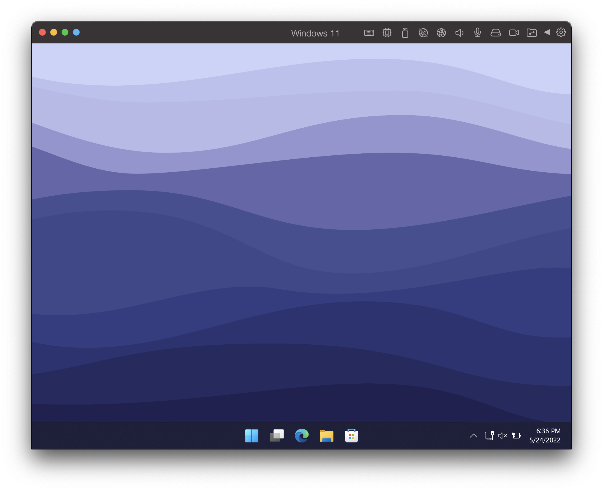

1.2.1 - Systems Software
| Specification |
| 1.2.1 - Systems Software |
- The need for, function and purpose of operating systems.
- Memory Management (paging, segmentation, and virtual memory).
- Interrupts, the role of interrupts and Interrupt Service Routines (ISR), role within the Fetch-Decode-Execute cycle.
- Scheduling: round robin, first come first served, multi-level feedback queues, shortest job first, and shortest remaining time.
- Distributed, embeedded, multi-tasking, multi-user and Real Time operating systems.
- BIOS.
- Device drivers.
- Virtual machines, any instance where the software is used to take on the function of a machine, including executing intermediate code or running an operating system within another.
|
Operating system
- The operating system is the core software the system runs on.
- It handles resource management (e.g. hardware/peripherals), handles interrupts, and manages memory.
- It provides a user interface, utilities for system maintenance, system security and a platform for software to be installed to or run on.
Memory management
Paging
- Memory is divided into fixed size physical divisions - each page is a fixed size.
- This fixed size of pages makes it easier to allocate pages and workout their position, however space inside a page may be wasted as programs tend not to take up the exact number of pages. All pages can still be used with no wasted space however.
Segmentation
- A program is deviced into variable sizes using logical divisions.
- Segmentation means programs only need the exact space needed...
- ...but there may be wasted space between programs as they are loaded and removed from memory.
Paging vs Segmentation - what are the similarities?
- Both are ways of partitioning and splitting up memory.
- To swap parts of programs, virtual memory may be used (see below).
- Both allow programs larger than memory to run or when insufficient memory is available, and both allow the non-contiguous (meaning not next to each other) storing of programs.
Virtual memory
- Virtual memory is where part of secondary storage is used as extra memory space when physical memory space is limited.
- Memory contents are divided into pages.
- Pages can't be ran directly from virtual memory. This means that pages not needed get moved to virtual memory, and pages that are needed get moved from it into physical memory.
Interrupts and the Fetch-Decode-Execute Cycle.
Interrupt: a signal sent to the processor meaning that a device/process needs attention.
What actually happens when an interrupt is recieved?
- If the interrupt is of a lower/equal priority to the current process, nothing will happen. The current process will continue as normal.
- If it is a higher priority, the CPU will finish its Fetch-Decode-Execute cycle. The contents of the CPU's registeres are then copied to a stack in memory.
- The location of the appropriate interrupt service routine is then loaded into the program counter. When it's complete, the previous instruction is popped from the stack and loaded back into the registers.
Scheduling
What is scheduling and why is it neccesary?
- Scheduling is neccesary to ensure all jobs are processed and to stop a slow resource wasting the processor's time.
- This prevents processes from failing to run due to deadlock and provides a reasonable response time.
- This also allows as many jobs as possible to be processed in the least possible time and ensures all jobs are processed fairly.
Round Robin
- Round robin scheduling is when processes are dealt with on a first-in-first-out basis. Each process is given a limited and fixed amount of time known as a time slice.
- If the prcoess does not complete before the time slice expires, the despatcher gives the CPU to the next process and the job will move to the back of the queue.
First come first served (FCFS)
- FCFS processing is where jobs are processed in the order they arrive, with no system of priorities.
- FCFS processing can be compared to queuing in a shop. The first job to arrive will always be the first job to be processed. Other jobs are queued up waiting for their turn.
Multi-level feedback queues (MLFQ)
- This is where a number of queues are used, as the name suggestes. Each queue has a different priority to each other.
- The algorithm will move jobs between these queues depending on the job's behaviour.
Shortest job first (SJF)
- This one if self-explanatory: the job that will take the algorithm thinks will take the shortest time is ran until it's finished.
- This requires the algorithm to understand how long each job will take in advance.
Shortest remaining time (SRT)
- The quickest job is completed first, but the processor will stop and re-evaluate when a new job arrives.
Types of operating systems
Distributed OS
- A system that shares processing between the processors on a network.
- The data between the different systems on the network is shared in order to reduce bottelenecks. This allows multiple computers to act as one and work on the same instruction, speeding up the time it takes to complete.
Embedded OS
- This is where a device is managed by its built in system software, which is stored in the devices ROM. This makes it unchangable.
- The OS will be specific to the hardware and its purpose.
- Embedded systems are found in various types of hardware - for example could include washing machines, ATMs, and even cell phones.
- These OSes tend to have a minimal user interface, with the hardware commonly consisting of just a few buttons and/or a dial. A smaller screen may also be used.
Multi-tasking OS
- Multi-tasking allows the user to run more than one program.
- An example of this could be browsing the internet or writing a document with word processing software while playing music in the background.
Multi-User OS
- This is where multiple users are able to use the same computer at the same time.
- Each user is given a time slice of the processor, similar to round robin scheduling.
Real-time OS (RTOS)
- Real-time operating systems are designed to give a guaranteed response time. It is meant to be used when the proceessor will make decisions and take action immediately.
- A self-driving car is a good example where an RTOS should be used. This is because the car would need to be able to respond to instant changes such as other cars and pedestrians. RTOS would offer a guaranteed response time, ensuring the safety of both the passengers.
Basic Input Output System (BIOS)
- The BIOS is a small program stored in Read Only Memory (ROM) that is used in the process of starting the computer and loading the OS.
- When the computer is powered on, the loader in ROM will send the instructions to load the OS by copying it from storage to RAM.
- The first job of the BIOS after you switch your computer on is to run the Power On Self-Test. This is where the BIOS will check the computer's hardware in order to ensure the computer can turn on properly.
- If the BIOS is deleted, the computer would become unusable. This is because the computer would not be able to start the OS up, nor would it be able to set up its initial configuration.
Device Drivers
- Devices drivers are a program that controls a piece of hardware and provides an interface between the device and the operating system (read: hardware and software).
- This enables the operating system to access hardware functions without needing to know the details of the hardware being used. This means it effectively acts as a translator.
- When new hardware is attached to the computer, such as a printer or a GPU, the relevant device driver would need to be installed before it can work with the OS.
Virtual machines (VMs)

A Windows 11 Virtual machine running on a macOS host through Parallels Desktop.
- A virtual machine is a virtualised instance of a computer, running in the form of software.
- The virtual machine will share (usually a specific portion of) the resources of the physical machines OS.
What are virtual machines used for?
- Developers can make software for a variety of different platforms. VMs can be used to simulate the intended platform, allowing the devlopers to ensure their code works on it.
- Virtual machines can also be used to test anti-virus software against viruses. The virus can be installed on the VM, and the update can be tested to see if it can catch them. The physical machine is protected from the virus and can quickly be reset to its original state.
Intermediate code
- This is simplified code used on a VM between high level and machine code.
- It's produced by a complier to be ran on any computer, allowing portability between machines.
- Sections of code can be written in differnet languages in different programmers.
- Only one version needs to be written, and this can be used on any device/OS combination supporting the Java Virtual Machine rather than multiple versions having to be made.